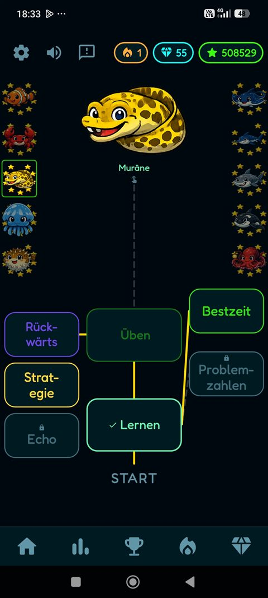
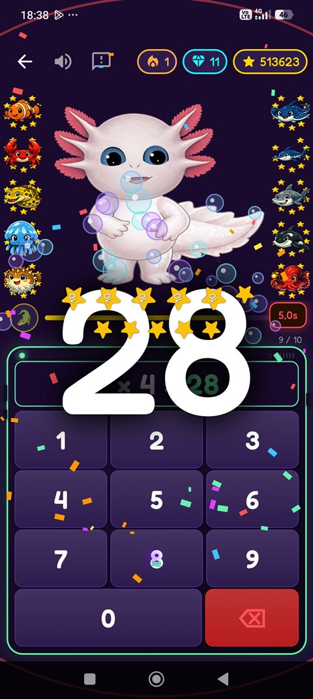
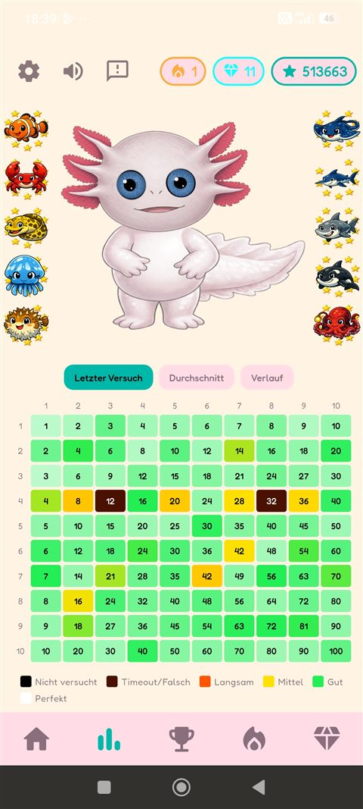
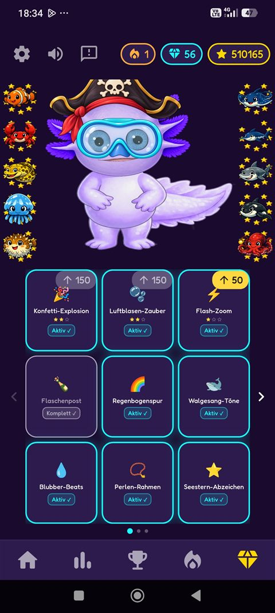
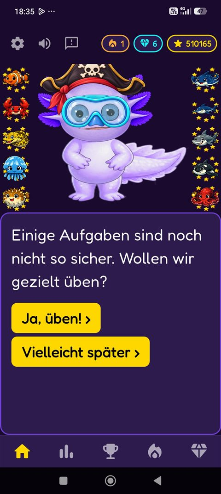

Eine Zahlenreihe, ein Gegner, ein neuer Freund
Jede Einmaleins-Reihe lebt als Meerestier in Ixilotls Unterwasserwelt – vom Krebs bei der 2er-Reihe bis zur Tiefseekrake als Endgegner der 10er-Reihe. Wer eine Reihe meistert, macht aus dem Gegner einen Verbündeten.
Adaptives Lernen
Ixilotl misst laufend, wo es noch hakt, und mischt bekannte mit neuen Aufgaben – so, dass am Ende jeder Übungsrunde ein Erfolgserlebnis steht, kein Frust.
Echte Automatisierung
Ziel ist nicht das einmalige Lösen einer Aufgabe, sondern das sofortige Wissen. Wiederholung mit System statt stumpfem Drill.
Belohnungen fürs Dranbleiben
Diamanten gibt es für Lernfortschritt – eine neue Bestzeit, eine erstmals gelöste Aufgabe – ebenso wie für regelmäßiges Üben. Damit lassen sich Optik und Sound der App personalisieren, etwa Effekte, Farbwelten oder Klänge. Kinder lieben es, ihre eigene Ixilotl-Welt zu gestalten.
Ein Blick in die App
Screenshots aus der laufenden Closed Beta.

Jede Zahlenreihe hat ihren eigenen Lernpfad – vom ersten Üben bis zur Abschlussprüfung.

Kurze Runden mit spürbarem, sofortigem Erfolgsgefühl.

Die Fortschritts-Matrix zeigt auf einen Blick, welche Aufgaben schon sicher sitzen.

Kosmetische Belohnungen für Optik und Sound, verdient durch Lernfortschritt und regelmäßiges Üben.

Ixilotl begleitet als Charakter durchs ganze Spiel – gibt Rückmeldung, Empfehlungen und Ermutigung im Dialog.
Wirksame Spielmechaniken, verantwortungsvoll eingesetzt
Ixilotl nutzt die Mechaniken, die gute Spiele fesselnd machen, um Kinder am Lernen dranzuhalten – ohne dafür auf Manipulation zu setzen.
Tägliche Aufgaben
Kurze tägliche und wöchentliche Aufgaben setzen erreichbare Ziele und belohnen regelmäßiges Üben – ohne Drohungen oder Schuldgefühle bei einem verpassten Tag.
Gezielte Übungsmissionen
Die App erkennt automatisch, welche Aufgaben noch unsicher sitzen, und schlägt gezielte Missionen genau dafür vor – statt wahllos zu wiederholen.
Ein Charakter, der mitwächst
Ixilotl selbst wächst mit dem Fortschritt des Kindes und reagiert sichtbar auf Erfolge und Pausen – eine Bindung, die zum Weitermachen motiviert, ohne Druck aufzubauen.
Kostenlos starten, einmalig freischalten
Kein Abo, kein Kleingedrucktes.
- Die 1er- bis 5er-Reihe dauerhaft nutzbar
- Ohne Zeit- oder Energie-Beschränkung
- Ohne Werbung
- Alle zehn Zahlenreihen
- Alle künftigen Updates inklusive
- Einmaliger Kauf, kein Abonnement
Für Eltern
Ixilotl soll sich bewusst von manipulativen Spiele-Apps abheben – deren wirksame Mechaniken nutzen, ohne deren Tricks.
- Keine WerbungWeder personalisierte noch sonstige Werbung – in keiner Version der App.
- Kein KaufdruckKeine künstlichen Countdown-Angebote oder Schuldgefühl-Mechaniken.
- DatensparsamLernfortschritt bleibt auf dem Gerät. Anonyme Absturz-/Nutzungsdaten sind in den Einstellungen abschaltbar – Details in der Datenschutzerklärung.
- Kein Chat, keine FremdenKeine sozialen Funktionen, keine Kontaktmöglichkeit zu anderen Nutzern.